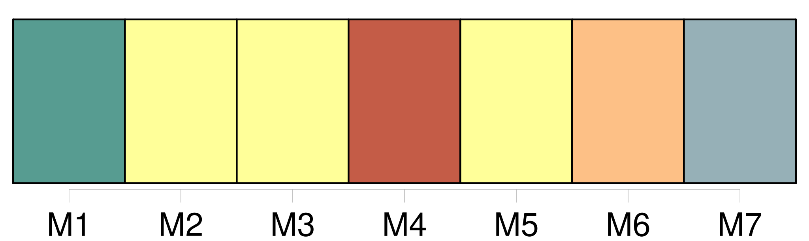
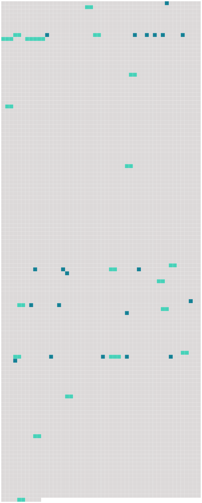

Longueur nb maillons : 39 mentions |
  |
Entre Swansea et le cap Saint Vincent, l'Amin coupe les eaux de l'Atlantique dans les coups de vent et les grains de la saison : derrière les vitres de la chambre des cartes on voit les paquets de [mer] éclater contre la roue du gouvernail, le corps de l'homme de quart, ils font sonner la cloche de timonerie. Au centre des froids humides de [la mer] , les mouettes soustraites au vent planent au-dessus du pont pendues à des fils invisibles. [10 phrases] [La mer] est bombée comme une tortue, [ses] volutes se défont et respirent avec un bruit de vapeur. [La mer] a des mouvements d'animaux en gelée, [elle] gonfle, [étire] , [rétracte] , [souffle] un protoplasme vitrifié.
[Elle] ne ressemble pas à [une femme capricieuse] , mais à [la plus primitive des bêtes] [18 phrases]
L'ancre tombe, une fumée de sable s'épanouit dans [la mer] [16 phrases]
Mais quels cadeaux fait [l'océan] quand ; les jours ont passé, quand on a coupé tant de fuseaux horaires qu'on s'embrouille dans ses calculs si l'on veut savoir ce que font vos amis à Paris, s'ils dorment ou s'ils mangent? [25 phrases] se demande-t -on les premières nuits ; au-dessous du niveau de [la mer] qui n'existe d'ailleurs pas plus que le niveau d'une poitrine, d'une hanche?? [40 phrases] La liberté de [la mer] et des chemins est tout à fait imaginaire : au commencement des voyages, [elle] ressemble à la liberté parce qu' [elle] est comparée à l'esclavage horrible de la vie qui précédait [la mer] Mais voici ce qu' [elle] est : une licence de certains mouvements physiques, plus de contrainte à des gestes que d'autres ont voulus. [1 phrases] Les routes de terre et de [mer] ont une faible densité d'habitants et ceux qui vivent sur elles ne sont pas gens à prescrire et à défendre tel ou tel mouvement. [1 phrases]
Vous pouvez uriner librement dans [la mer] : nommerez -vous ces actes la liberté? [8 phrases]
» Je pense ces choses sur [la mer] pour [lui] rendre justice, être juste contre [elle] [2 phrases] [La mer] et les déserts, l'élément mobile comme le feu et l'élément apparemment immobile, ces êtres sans voix, sans bouche, sans regards, défigurés par les brûlures ne conspirent même pas contre l'homme, [elles] ne sont pas de son parti, ils ne sont pas ses adversaires : à peine parvient -il à les penser à force de mesures par la géométrie et les calculs qui traitent d'étendues inflexibles : la science est simplement ce qui nous empêche de nous sentir perdus. [19 phrases] Le reste du temps, il n'y a pas tous les jours des tempêtes, des ports difficiles, il s'emmerde, il regarde son cargo comme une cellule, il n'arrive pas à se consoler en traitant [la mer] de putain. Les sentiments de [la mer] le secoueraient de son rire écossais : [c'] est une matière instable difficile à traiter, dure à comprendre, [c'] est [un mauvais cheval] [Elle] peut tuer d'une mort humide et pourrie celui qui [l'] oublie à la seconde où il faut se souvenir de [ses] façons. [14 phrases] Aden est la plus belle ville et la plus agréable de toute l'Arabie : elle est fermée de murailles du côté de [la mer] et de montagnes du côté de la terre. [17 phrases]
Des chemins de ronde fortifiés dominent les passes taillées dans le rocher entre la ville indigène et la ville britannique, il y a des tunnels noirs où circule l'odeur d'ammoniaque des excréments, des villages de tombeaux, des villages de maisons, des citernes de métal pleines de pétrole, des casernes regardant [la mer] , des hangars d'avion, des clubs, des missions, poussière de la chrétienté en morceaux, une loge maçonnique, ce qu'il faut au bonheur. [28 phrases] , des Messageries Maritimes s'ouvrent une voie dans un taillis de cargos dépeints, de pétroliers, de vedettes, de boutres aux châteaux coloriés comme des caravelles, d'un bleu, d'un vert si beau dont les reflets grouillent sur [la mer] comme des couleuvres. |
 |
La ressource peut être téléchargée sur la page Ortolang
Si vous avez des questions ou vous voyez des erreurs, merci d'envoyer un mail à silvia.federzoni89@gmail.com
Site développé par S. Federzoni (contact)